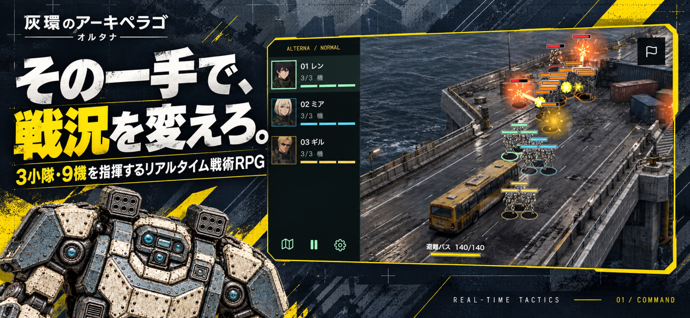
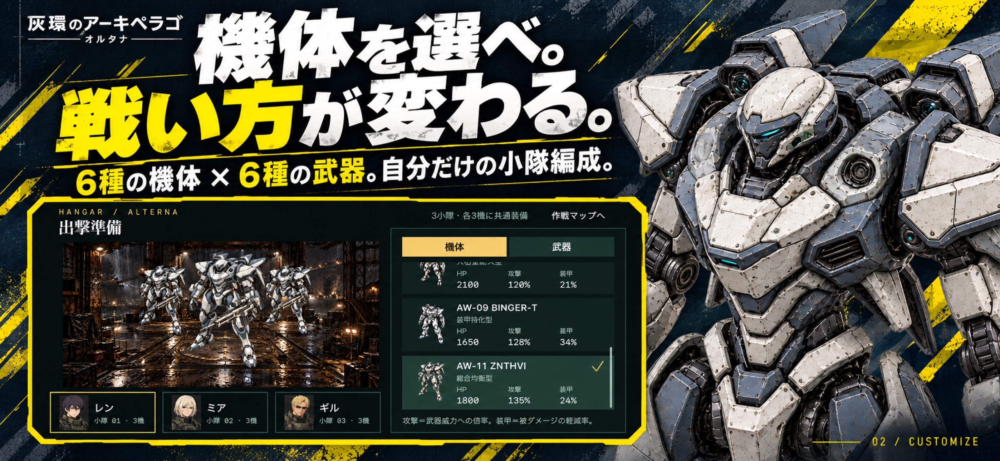
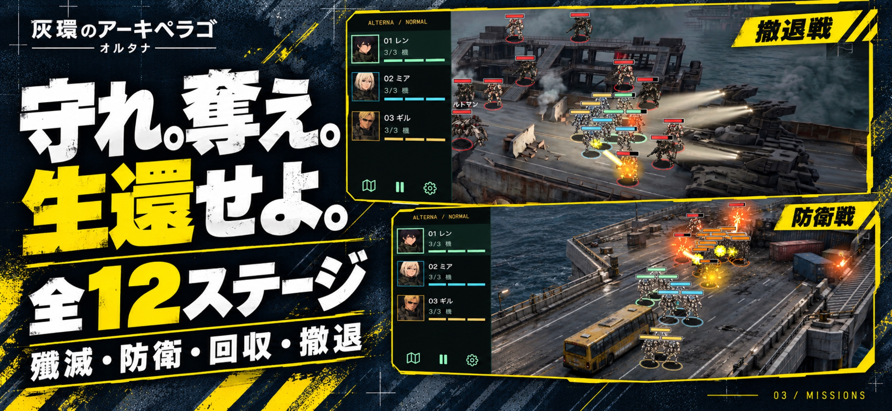
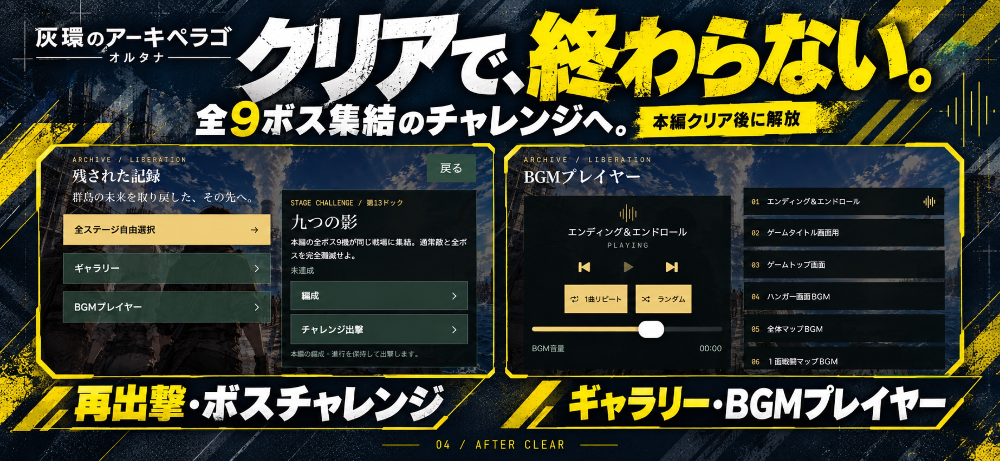

01 / COMMAND
小隊の一手を考える。
小隊と行き先をタップして進軍を指示。射程と射線が通ると各機が自動で攻撃します。遮蔽物や経路を読み、いつ待機し、どこで修理するかを判断します。
iPHONE / REAL-TIME TACTICAL RPG
3小隊・最大9機の戦闘メカを指揮。
進軍、待機、修理を使い分け、工業群島を舞台とした任務に挑む。
実際のゲームキャプチャを使用した紹介動画です。2026年9月収録のため、最新バージョンとは表示や挙動が異なる場合があります。画面内の説明文とゲーム内BGMを含みます。1920 × 886 px / H.264 / 約8.9 MB。
以下はゲーム画面・機体素材を参照し、画像生成を用いて制作したポスターのデザイン案です。画面内の文字や人物・機体などに再描画された箇所があり、実際のスクリーンショットとは異なります。各画像は2796 × 1290 pxです。




01 / COMMAND
小隊と行き先をタップして進軍を指示。射程と射線が通ると各機が自動で攻撃します。遮蔽物や経路を読み、いつ待機し、どこで修理するかを判断します。
02 / CAMPAIGN
避難バスの護衛、電源設備の制圧、物資回収、市民の避難支援、崩落する橋での時間制限戦。全12ステージで、レン、ミア、ギルの物語を描きます。
03 / BEYOND
本編クリア後は全ステージへの再出撃、全ボス9機が集結するチャレンジ、画像ギャラリー、14曲のBGMプレイヤーを楽しめます。
Archipelago Alterna is a real-time tactical RPG for iPhone. Command up to nine mechs across three squads, choose their routes, and decide when to hold position or repair. Units attack automatically when targets are within range and line of sight.
The 12-stage campaign includes escort, facility capture, supply recovery, civilian evacuation, and a timed battle on a collapsing bridge. Six mech types and six weapon types unlock as the story progresses. After completing the campaign, players can replay stages, face all nine bosses in a challenge battle, and explore an art gallery and a 14-track music player.
The 24-second video uses actual gameplay captures recorded in September 2026; the current version may differ. The four posters are promotional design concepts created with image generation using game references. Some details are redrawn, so they are not unaltered gameplay screenshots.